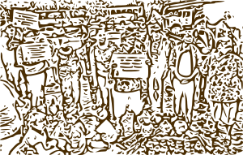

SOBRE NOSOTROS
¿QUE ES LA ARTESANÍA?
“Artesanía es un modo independiente de producir objetos utilitarios y decorativos para la vida cotidiana del hombre, usando materiales en estado natural, o bien que, habiendo sido procesados industrialmente conserven su esencia;
Con destrezas o técnicas empíricas, elaborados manualmente y/o utilizando escasos instrumentos o máquinas donde la destreza manual del hombre sea imprescindible y fundamental para imprimir al objeto un estilo que refleja la personalidad del artesano, expresándose en los mismos contenidos artísticos y la relación mutuamente modificante con el contexto socio-cultural del cual emergen.”
¿QUIENES SOMOS?
Somos la Unión de Artesanos Independientes de Córdoba, asociación con 37 años de vida y más de 50 artesanos/nas, de Córdoba Capital e interior de la Provincia. Udaic se constituyó en el año 1984 por y para artesanos/nas teniendo como objetivo principal, promover y proteger el trabajo artesanal, fomentar el espíritu de asociativo y de cooperación entre los artesanos, peticionar y gestionar ante las autoridades de los poderes públicos, la adopción de medidas que tiendan al beneficio del artesanado. Nucleamos artesanos /nas de diferentes rubros.
Estos rubros responden a la especificidad de cada uno, según la transformación de la materia prima, oficio, originalidad y propiedad del diseño, funcionalidad y modo de producción, a la particularidad de artesanías urbanas, de proyección Folklórica y tradicional o rescate.
¿POR QUE UNIRTE A UDAIC?
Formar parte de una Asociación es asumir el compromiso de construir entre todos las condiciones para mejorar las condiciones de vida del sector del cual somos parte. Las posibilidades de desarrollo se darán en el marco de un compromiso compartido y responsable en el rol de cada uno como asociado.
Los interesados en formar parte de la Asociación deberán fiscalizar sus productos teniendo en cuenta los criterios generales de UDAIC, basados en el Plenario de Artesanos de 2002 (consultar www.artesanosudaic.com.ar – www.freewebs.com/plenario/).